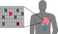
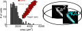
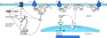

about cv skills
|
I graduated with a PhD in cardiac systems biology. My research revolved around understanding how genetics impacts heart failure and how drugs are effective in different patients.
To test model predictions, I developed a high-throughput cell imaging method that takes advantage of high-speed, high-gain cameras. A pipeline was created to analyze the resulting image data using automated image segmentation algorithms.
selected current projects
Craigflagr is a web app for screening spam Craigslist posts using natural language processing and machine learning in Python.

Gene-protein-parameter mapping of altered genes in heart failure by integrating human transcriptional profiles with computational models of β1-adrenergic signaling and EC coupling.
Munch is a massively ubiquitous network communications hub for advanced middleware, API mirroring, interconnectivety and ambient intelligence.
|
publications 
Modeling the effects of β1-adrenergic receptor blockers and polymorphisms on cardiac myocyte Ca2+ handlingβ-blockers are commonly used to treat heart failure but are still poorly understood. A systems pharmacology approach was used here to understand how β-blockers work.Automated image analysis of cardiac myocyte Ca2+ dynamicsCa2+ is a key link between the electrical and mechanical activity of the heart. A method is presented for high-throughput measurement, automated cell segmentation and signal analysis of Ca2+ in heart cells.Cardiac models in drug discovery and development: a reviewThis article discusses how cellular models of electrophysiology, cell signaling, and metabolism have been used to investigate therapies for cardiac diseases including arrhythmia, ischemia, and heart failure. 
Systems analysis of small signaling modulesUsing eight newly generated models, systems analysis of small protein signaling modules is shown to rapidly generate new quantitative knowledge from published experimental research. |